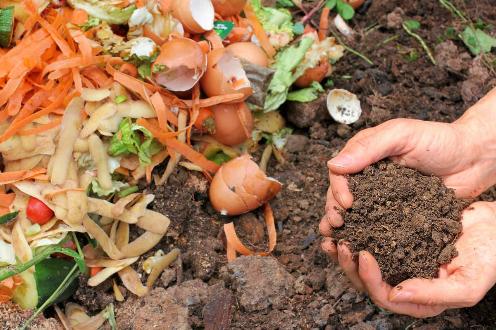

Food

Most food waste can be composted.
Egg and nut shells can be used as natural fertilizer.
Spoiled food should be put in a landfill as it can contain harmful toxins.
Citrus, tomato, and pickled food products cannot be composted as they contain acidic material.
Most fruits and vegetables can be put in a compost bin as they have useful nutrients for your soil.
Meat, dairy, oils and fats cannot be composted as they can attract pests by the odor, bury them in landfill.
Late leftovers can be donated to farmers, who can use these to feed their animals.